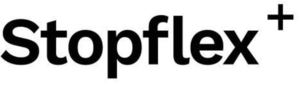

Trade Mark Journal No.2025/015 11 April 2025
WO0000001818115 (6,17)
Office of origin: Italy
Date of International Registration:25 January 2024
Date of designation in the UK:
7 March 2025

- Class 6
- Grommets (Metal -); metal hose clamps; metal hose fittings; metal hoses for plumbing use; flexible pipe locks of metal; zip ties of metal; clips of metal for pipes; metallic devices being fittings, bands, stretchers, tension links, clips, hangers, couplings and clamps for holding or binding flexible hoses under pressure.
- Class 17
- Stuffing rings (Non-metallic -); sealing rings for hose fittings (Non-metallic -); articles made of rubber for sealing; seals, not of metal, for joints; seals, not of metal, for conduits; water-tight collars of rubber; flexible hoses, not of metal; fittings, not of metal, for flexible pipes; couplings, not of metal, for high pressure hoses; waterproof packings; non-metal gaskets; seals for pipe connections; expansion joint fillers; fittings, not of metal, for compressed air lines; rings of rubber for use as pipe connection seals; non-metal devices being fittings, bands, stretchers, tension links, clips, hangers, couplings and clamps for holding or binding flexible hoses under pressure; seals of metal for preventing leakage of gases; seals of metal for the reduction of friction in metals; seals of metal being gaskets for hose fittings.
OP S.R.L.
Representative: Jacobacci & Partners S.p.A., Piazza della Vittoria 11, I-25122 Brescia, ITALY